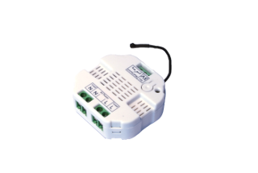
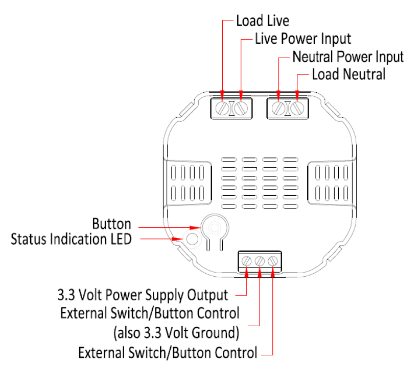

AEO_MES
Firmware Version : 3.0 |
 |
Quick StartA This device is a Z-Wave Actuator. Single click the button located near the Status Indication LED or alternatively press the external switch/ button control quickly 6 times to include or exclude the device. If the Aeon Labs Micro Switch is not included into any Z-Wave network, the LED will be blinking slowly continually. Please refer to the chapters below for detailed information about all aspects of the products usage. |
Product description
Installation Guidelines
The device is designed for a 3 wire system which requires a neutral connection. The module is powered from the main supply.
The schematic below shows how to wire the actuator. The power supply and the appliance are connected by the Load, Power Input and Neutral connectors. The 3.3 Volt and External Switch connectors are for external switching.

After the electrical installation the device has to be implemented in the Z-Wave Network.
Behavior within the Z-Wave network
I On factory default the device does not belong to any Z-Wave network. The device needs to join an existing wireless network to communicate with the devices of this network. This process is called Inclusion. Devices can also leave a network. This process is called Exclusion. Both processes are initiated by the primary controller of the Z-Wave network. This controller will be turned into exclusion respective inclusion mode. Please refer to your primary controllers manual on how to turn your controller into inclusion or exclusion mode. Only if the primary controller is in inclusion or exclusion mode, this device can join or leave the network. Leaving the network - i.e. being excluded - sets the device back to factory default.
If the device already belongs to a network, follow the exclusion process before including it in your network. Otherwise inclusion of this device will fail. If the controller being included was a primary controller, it has to be reset first.
Operating the device
The switch is operated by an external switch/button or wireless. The click sets the switch on or off.
Node Information Frame
NI The Node Information Frame is the business card of a Z-Wave device. It contains information about the device type and the technical capabilities. The inclusion and exclusion of the device is confirmed by sending out a Node Information Frame. Beside this it may be needed for certain network operations to send out a Node Information Frame.
A single click at the Inclusion/Exclusion switch sends a Node Information Frame.
LED Control
- The LED on the Micro Switch will blink if it is currently not paired into a Z-Wave network.
- If the Aeon Labs Micro Switch was successfully included to a Z-Wave network, the Status Indication LED will either be solid on or off (depending on if the switch is on or off) 10 seconds after the button was pressed.
Associations
A Z-Wave devices control other Z-Wave devices. The relationship between one device controlling another device is called association. In order to control a different device, the controlling device needs to maintain a list of devices that will receive controlling commands. These lists are called association groups and they are always related to certain events (e.g. button pressed, sensor triggers, ...). In case the event happens all devices stored in the respective association group will receive a common wireless command.
Association Groups:
| 1 | (max. nodes in group: 5) |
| 2 | (max. nodes in group: 5) |
Technical Data
| Explorer Frame Support | Yes |
| SDK | 4.54 |
| Device Type | Slave with routing capabilities |
| Generic Device Class | Binary Switch |
| Specific Device Class | Binary Power Switch |
| Routing | Yes |
| FLiRS | No |
| Firmware Version | 3.0 |